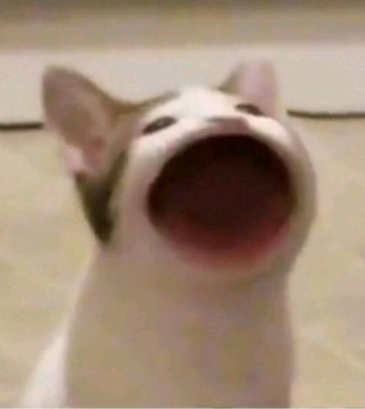

- Profile
- Class
- JavaScript
Welcome

예: Credit 가사
요즘 들어 바쁘게 시간을 보냈지
아끼던 내 신발 색이 바랬으니
불과 몇 달 만에 많은 것이 변했나 봐
너는 내게 찾아와서 물어 How you feel
Well I feel love I feel blessed
과분하게 많이 받은 것 같아
지금까지 날 도와준 이들 이름 하나하나
빠짐없이 여기에 남기기로 했지
이곳에 오기 전에
난 그저 방구석에서
변하는 게 무서웠기에 두꺼운
이불을 덮어놨네
의사 선생님이 말했지
조금은 다를지
몰라도 Gotta see yourself
당연한 말이지만은
난 기준을 남에게
뒀었지 I know
이제서야 주변을 봐
지금껏 남은 친구들과
떠나지 않은 사람들 모두를
기억해 나는 이 곡에다가
너무 늦게 말을 건네
넌 당연하게 웃어줬네
But I can never write my wrongs
적어두지 않는다면
보쌈 삼겹살 스파게티 된장찌개 스테이크